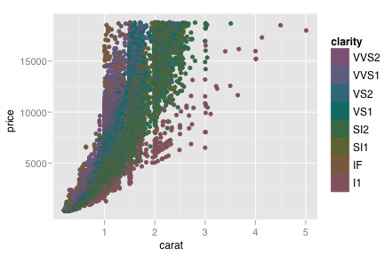
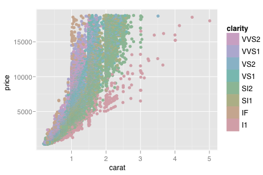
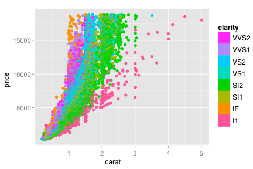
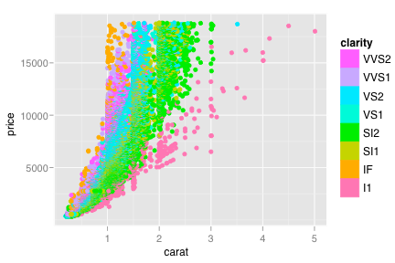
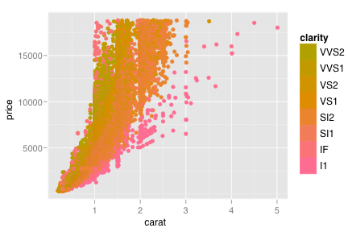
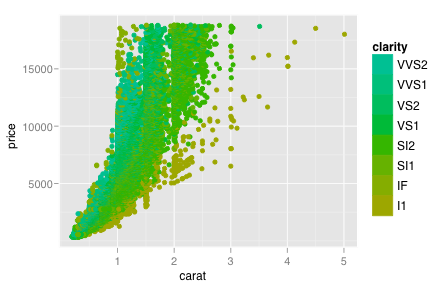
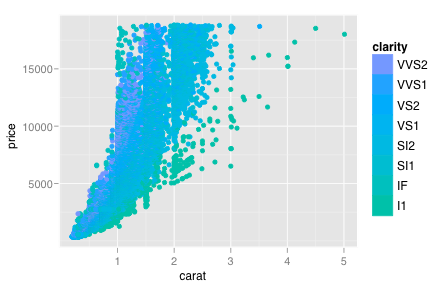
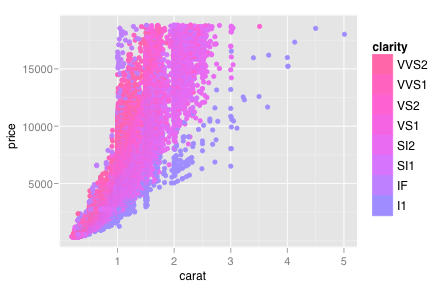
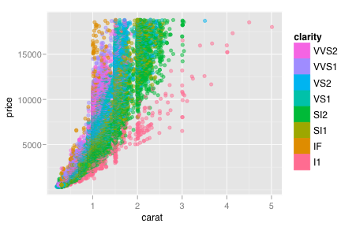
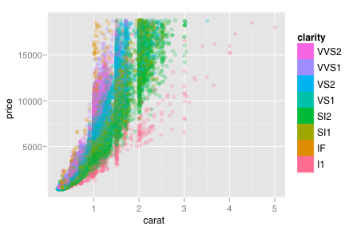

scale_hue
Colours that vary continuous in hue
Details
Examples
> (d <- qplot(carat, price, data=diamonds, colour=clarity))> > # Change scale label > d + scale_colour_discrete() > d + scale_colour_discrete("clarity")
> d + scale_colour_discrete(expression(clarity[beta])) > > # Adjust luminosity and chroma > d + scale_colour_discrete(l=40, c=30)  > d + scale_colour_discrete(l=70, c=30)  > d + scale_colour_discrete(l=70, c=150)  > d + scale_colour_discrete(l=80, c=150)  > > # Change range of hues used > d + scale_colour_discrete(h=c(0, 90))  > d + scale_colour_discrete(h=c(90, 180))  > d + scale_colour_discrete(h=c(180, 270))  > d + scale_colour_discrete(h=c(270, 360))  > > # Vary opacity > # (only works with pdf, quartz and cairo devices) > d + scale_colour_discrete(alpha = 0.9) > d + scale_colour_discrete(alpha = 0.5)  > d + scale_colour_discrete(alpha = 0.2) 